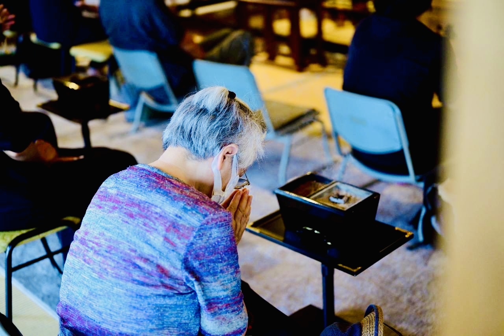
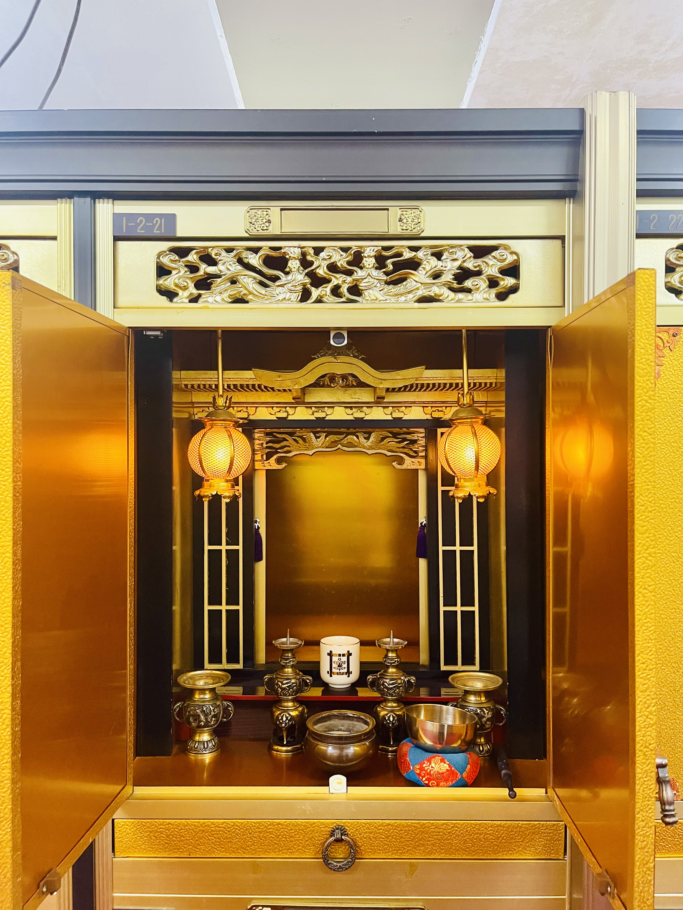
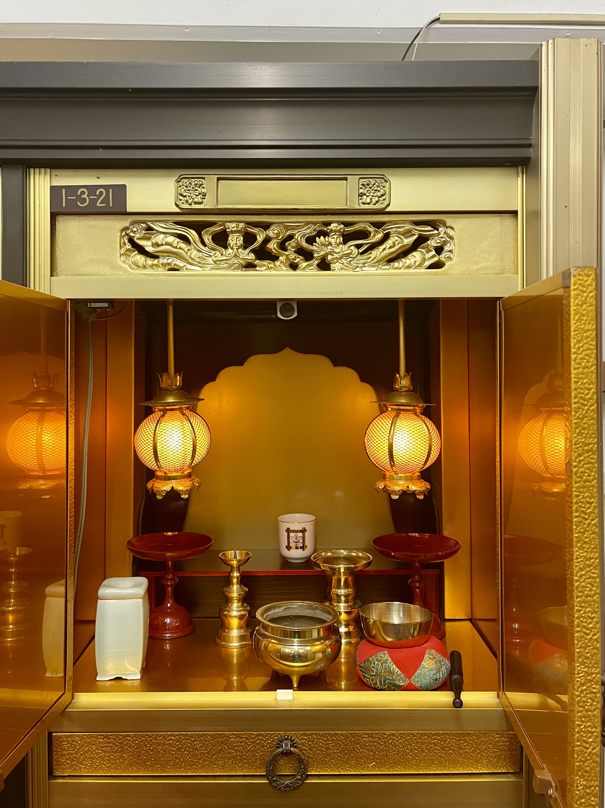
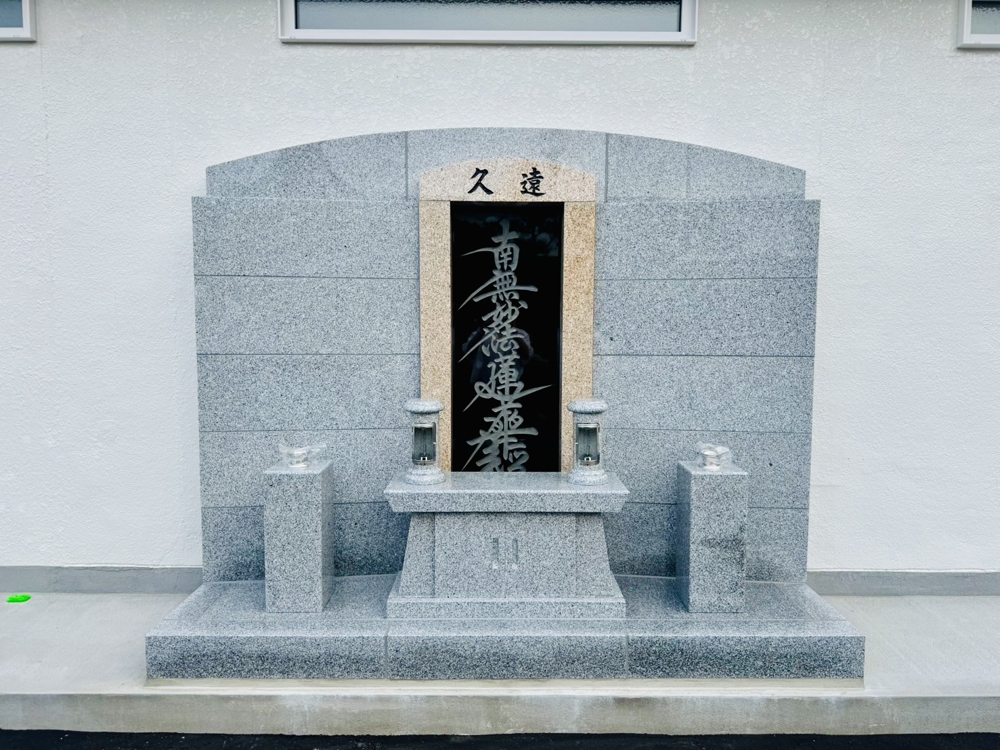

大切な方への祈り
日蓮宗の儀礼に基づき、真心を込めて故人様やご先祖様のご供養を執り行います。
日常の中に祈りの時間を — 毎月の命日のご供養

毎月の命日にご自宅へ伺い、お仏壇の前で読経供養を行います。
節目を丁寧に、心を込めて — 四十九日・年回法要

四十九日、一周忌、三回忌などの大切な節目に、ご親族の皆さまと共に丁寧にご供養いたします。日蓮宗の伝統に則った法要を通じ、故人への想いを繋ぎます。
| 一周忌 | 令和7年（2025年）にご逝去された方 |
|---|---|
| 三回忌 | 令和6年（2024年）にご逝去された方 |
| 七回忌 | 令和2年（2020年）にご逝去された方 |
| 十三回忌 | 平成26年（2014年）にご逝去された方 |
| 十七回忌 | 平成22年（2010年）にご逝去された方 |
| 二十三回忌 | 平成16年（2004年）にご逝去された方 |
| 二十七回忌 | 平成12年（2000年）にご逝去された方 |
| 三十三回忌 | 平成6年（1994年）にご逝去された方 |
| 五十回忌 | 昭和52年（1977年）にご逝去された方 |
お塔婆のお申し込みや、お斎（おとき）の手配などについてもご相談に応じます。日程はお早めにご連絡いただけますと幸いです。
← 仏事・弔いトップへ戻るお題目とともに歩む、最後のお見送り

故人の旅立ちを、日蓮宗の儀礼に基づき厳かにお送りします。枕経から本葬まで、ご遺族に寄り添い、安心感のある葬儀を執り行います。
お題目をお唱えし、戒名（法号）をお授けすることで、故人が安らかに霊山浄土へ旅立たれるよう、心を込めてお勤めいたします。
急を要するご葬儀のご相談は、24時間お電話にて承っております。葬儀社がまだお決まりでない場合のご相談にも応じます。
☎ 0143-22-4284
ご家族のお気持ちに寄り添い、形式に縛られすぎず、故人らしいお見送りができるようご相談に応じます。
← 仏事・弔いトップへ戻る天候を気にせず、いつでも会いに来られる屋内施設

室蘭の厳しい気候の中でも、一年を通じて快適にお参りいただける屋内型の納骨堂です。清浄な空間で、大切な方との対話のひとときをお過ごしください。
雪深い室蘭の冬でも、雨の日でも、安心してお参りいただけます。
明るく整えられた屋内で、静かにお祈りに集中できます。
墓石の管理が不要のため、ご家族への負担がかかりません。
日々のお勤めを通じて、僧侶が責任を持って管理いたします。
区画のご見学やご相談は随時承っております。お申し込み前に、必ず実際の施設をご覧いただけますので、お気軽にお問い合わせください。
| 1級 | 100万円 |
|---|---|
| 2級 | 70万円 |
| 3級 | 40万円 |



| お申し込み | お電話または当ホームページのお問い合わせフォームより |
|---|
現代の生活スタイルやニーズに合わせ、お一人おひとりの事情に配慮した供養の形をご提案します。小さな命や、家族同然のペットへの祈りも大切にしています。
後継者の不安を安心へ — 永代にわたる管理と供養

「お墓の継承者がいない」「遠方で頻繁にお参りできない」など、現代のさまざまなご事情に応じて、当山が責任を持って永代にわたり管理・供養を続ける制度です。身寄りのない方や、ご家族に負担をかけたくない方も安心してご利用いただけます。
毎日の読経と年中行事を通じて、お納めいただいたご遺骨は手厚く供養されます。お一人さまでも、ご夫婦でも、ご家族単位でもお申し込みいただけます。
「遠方の実家のお墓を整理したい」「先祖代々のお墓を当山にまとめたい」といったご相談にも応じます。書類手続きから改葬まで、丁寧にサポートいたします。
個別での供養プランです。位牌あり、過去帳への記入と、遺骨の個別保管が含まれます。
| 1人 | 30万円 |
|---|---|
| 2人 | 45万円 |
| 3人 | 60万円 |
上記（個別法号供養）と同様に、位牌あり、過去帳への記入および遺骨の個別保管を行います。
| 費用 | 何人でも 50万円 |
|---|
位牌なし、過去帳への記入なし、遺骨は他の方と一緒に合祀されます。
| 費用 | 何人でも 5万円 |
|---|
詳細・費用などはお気軽にお問い合わせください。
← 仏事・弔いトップへ戻る
この世に生を受けることが叶わなかった、小さな命のためのご供養です。流産・死産・中絶などにより別れを経験されたご家族の心に寄り添い、その魂が安らかであるようお祈りいたします。
ご供養はご家族のお気持ちが最も大切です。お一人で抱え込まず、まずはお気軽にご相談ください。当山の慈母観音菩薩さまが、優しくその御魂を見守ってくださいます。
紙の申込書をご希望の方は こちらのPDF をダウンロードしてご利用ください。
← 仏事・弔いトップへ戻る共に生きた証を刻む、愛するペットのための安らぎの地

家族の一員として共に過ごしたペットたちへの感謝と弔いの気持ちを、お経とともにお捧げいたします。動物たちもまた、私たちの大切な仏縁を結ぶ存在です。
当山には、ペットのための専用供養墓もご用意しております。お題目の響く聖地で、安らかに眠れる場所をご提供します。犬・猫はもちろん、小鳥や小動物までお受けしております。
| 永代合祀供養 | 3万円 |
|---|---|
| 個別納骨壇 | ＋年間5千円 |
「家族同然だった存在を、きちんと見送ってあげたい」というお気持ちを大切に、心を込めてお勤めいたします。詳細はお気軽にお問い合わせください。
← 仏事・弔いトップへ戻る代々にわたり大切にされてきたもの、人の想いが込められたものには古来より魂が宿ると言われています。事情により処分しなければならない時には丁寧にご供養する事が肝要であります。妙傳寺では魂抜き（閉眼）の法要を行い、お焚き上げで浄火ご供養いたします。
まずはお電話にてご相談ください。内容によってはお受けで出来ない場合もございます。
※雛人形、五月人形の金属類は極力はずしてご持参ください。その他、人形以外の付属品もご遠慮いただいております。
← 仏事・弔いトップへ戻る